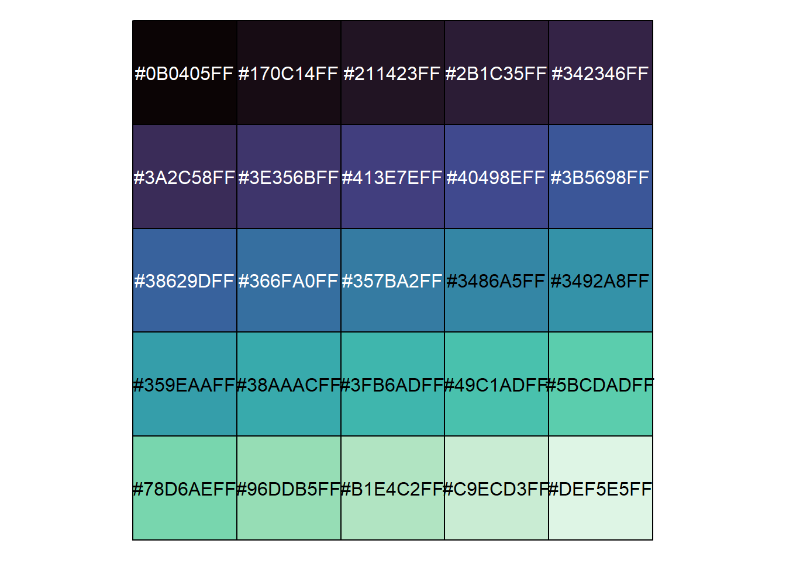

Colorblind palettes in R with viridisLite package
viridisLite package
viridisLite is a lightweight version of viridis package. Both are meant to provide a series of color maps designed to improve graph readability for readers with common forms of vision impairment. Base viridis provides additional functionalities, while viridsLite is meant to be as lightweight and dependency-free as possible, for maximum compatibility with all the R ecosystems.
The package can be installed with:
install.packages("viridisLite")Or you can install the developer version with:
devtools::install_github("sjmgarnier/viridisLite")Palettes
viridisLite offers 8 color palettes to choose from (see Figure 1), via the corresponding convenience functions, useful when the scale must be passed as a function name. Each of those functions returns a character vector of color hex codes.

Below you can see the general syntax of viridiLite convenience functions:
palette_name(n, alpha = 1, begin = 0, end = 1, direction = 1)Where:
- n: Number of colors to be in the palette .
- alpha: transparency, with 1 = no transparency, and 0 = max. transparency.
- begin: starting hue.
- end: ending hue.
- direction: order of colors. 1 = order from darkest to lightest. 0 = from lightest to darkest.
See the official documentation for more details. Following, I provide some examples.
Packages
We start by loading the packages we’ll use throughout this tutorial.
library(ggplot2)
library(viridisLite)
library(scales)
library(patchwork)Show color palettes
Since the output of viridisLite functions consists of a vector of hex codes, it’s quite hard to tell precisely which colors were actually picked. scales package provides a convenient and very easy way to visualize user generated palettes. See the following example.
pal <- viridisLite::mako(25)
pal [1] "#0B0405FF" "#170C14FF" "#211423FF" "#2B1C35FF" "#342346FF" "#3A2C58FF"
[7] "#3E356BFF" "#413E7EFF" "#40498EFF" "#3B5698FF" "#38629DFF" "#366FA0FF"
[13] "#357BA2FF" "#3486A5FF" "#3492A8FF" "#359EAAFF" "#38AAACFF" "#3FB6ADFF"
[19] "#49C1ADFF" "#5BCDADFF" "#78D6AEFF" "#96DDB5FF" "#B1E4C2FF" "#C9ECD3FF"
[25] "#DEF5E5FF"With scales::show_col() function we can plot ‘pal’ as a color matrix.
scales::show_col(pal)
Plot examples
Below I provide some plot examples:
df <- data.frame(x = rnorm(20000), y = rnorm(20000))
vL_pals <- c("viridis", "magma", "inferno", "plasma", "cividis", "rocket",
"mako", "turbo")
ls <- vector(mode = "list", length = length(vL_pals))
names(ls) <- vL_pals
for (i in 1:length(vL_pals)) {
pal_parsed = parse(text = vL_pals[i])
ls[[i]] <- ggplot2::ggplot(df, aes(x, y)) +
stat_density2d(aes(fill = after_stat(level)),
alpha = .5, geom = "polygon", n = 200) +
scale_fill_gradientn(colours = eval(pal_parsed)(n = 256)) +
ggtitle(label = vL_pals[i])
}
(ls[[1]] + ls[[2]]) / (ls[[3]] + ls[[4]]) / (ls[[5]] + ls[[6]]) / (ls[[7]] + ls[[8]]) # patchwork composition